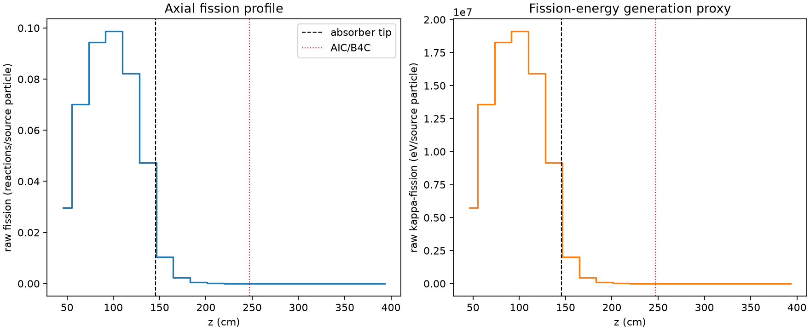
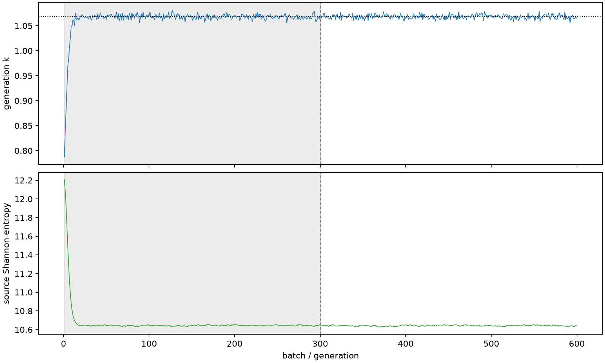

| field | value |
|---|---|
| experiment | V2-STAGE_128_OGRENCI_03-0010 |
| k | 1.0680909080274228 |
| MC standard error | 0.00017277655288891548 |
| seconds | 995.4633992660019 |
| acceptance | not_assessed |
| convergence | review_required |
Completed is output integrity only; physical and statistical review required. Zero tallies do not prove zero production or zero uncertainty.
| diagnostic | value |
|---|---|
| geometric fuel voxels | 5280 |
| zero fission tally voxels | 1588 |
| low signal fuel voxels | 2626 |
| low signal fission share | 8.281647010487857e-05 |
| low signal kappa share | 8.285669564168864e-05 |
| important fission share | 0.9501316855254012 |
| previous filter included | 2654 |
| duration estimate s | 1562.5173488400023 |
| actual minus estimate s | -567.0539495740004 |
| fission relative MC error | statistics |
|---|---|
| all_geometric_fuel | {"voxels": 5280, "positive_mean_voxels": 3692, "zero_mean_voxels": 1588, "undefined_relative_error_voxels": 1588, "median": 0.015959808471935545, "p95": 0.9336576783447432, "maximum": 1.0000000000000002} |
| low_signal | {"voxels": 2626, "positive_mean_voxels": 1038, "zero_mean_voxels": 1588, "undefined_relative_error_voxels": 1588, "median": 0.5685373533089001, "p95": 1.0, "maximum": 1.0000000000000002} |
| important_95pct | {"voxels": 1507, "positive_mean_voxels": 1507, "zero_mean_voxels": 0, "undefined_relative_error_voxels": 0, "median": 0.005452106665321844, "p95": 0.008625710553998552, "maximum": 0.010181752678543338} |
| outside_previous_filter | {"voxels": 2626, "positive_mean_voxels": 1038, "zero_mean_voxels": 1588, "undefined_relative_error_voxels": 1588, "median": 0.5685373533089001, "p95": 1.0, "maximum": 1.0000000000000002} |
| kappa_fission relative MC error | statistics |
|---|---|
| all_geometric_fuel | {"voxels": 5280, "positive_mean_voxels": 3692, "zero_mean_voxels": 1588, "undefined_relative_error_voxels": 1588, "median": 0.015935149024845004, "p95": 0.9342332370105785, "maximum": 1.0000000000000002} |
| low_signal | {"voxels": 2626, "positive_mean_voxels": 1038, "zero_mean_voxels": 1588, "undefined_relative_error_voxels": 1588, "median": 0.5671576277331511, "p95": 1.0, "maximum": 1.0000000000000002} |
| important_95pct | {"voxels": 1507, "positive_mean_voxels": 1507, "zero_mean_voxels": 0, "undefined_relative_error_voxels": 0, "median": 0.005445870501704735, "p95": 0.008615817775835154, "maximum": 0.01016894259454413} |
| outside_previous_filter | {"voxels": 2626, "positive_mean_voxels": 1038, "zero_mean_voxels": 1588, "undefined_relative_error_voxels": 1588, "median": 0.5671576277331511, "p95": 1.0, "maximum": 1.0000000000000002} |
| axial bin | fission share | kappa-fission share |
|---|---|---|
| 1 | 0.06812435475425042 | 0.06812673924112926 |
| 2 | 0.16097581016877316 | 0.16097310590217223 |
| 3 | 0.21672477582437175 | 0.21672073238470738 |
| 4 | 0.22636336987709135 | 0.22635915363772632 |
| 5 | 0.18842061394233564 | 0.18841730337173876 |
| 6 | 0.1086627882436348 | 0.10866280512319755 |
| 7 | 0.023721753425407457 | 0.0237306759636792 |
| 8 | 0.005362490333235558 | 0.005364738917168047 |
| 9 | 0.001266282462871635 | 0.0012668123799340042 |
| 10 | 0.0002905426768368893 | 0.00029067288422599295 |
| 11 | 6.752634776053129e-05 | 6.755728129717666e-05 |
| 12 | 1.5063914079264633e-05 | 1.507009563043018e-05 |
| 13 | 3.5257761518052655e-06 | 3.5294860970692184e-06 |
| 14 | 9.716425130658622e-07 | 9.725238035084913e-07 |
| 15 | 1.2670912480844342e-07 | 1.268287560588103e-07 |
| 16 | 3.90156179314687e-09 | 3.9787370336993705e-09 |
| 17 | 0.0 | 0.0 |
| 18 | 0.0 | 0.0 |
| 19 | 0.0 | 0.0 |
| 20 | 0.0 | 0.0 |
Histories include the inactive-to-active transition at batch 300. kappa-fission approximates fission energy production, not total heat deposition.

